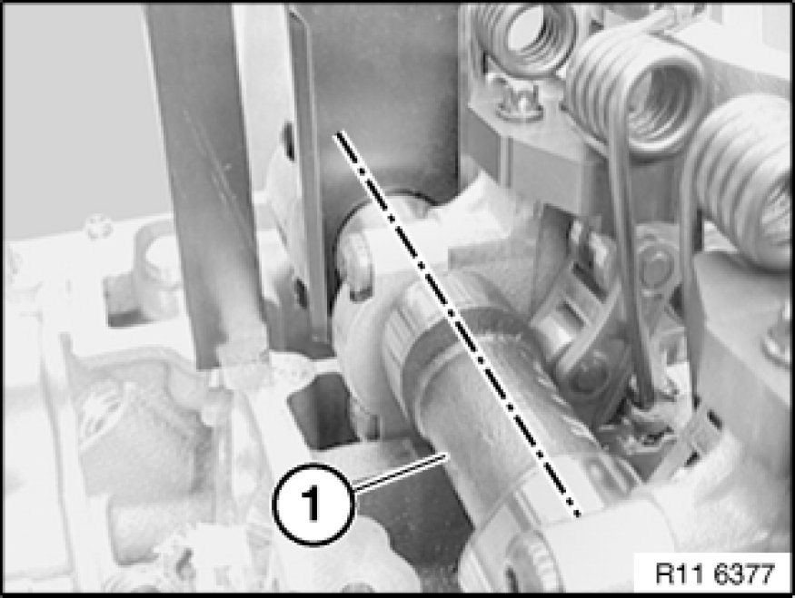
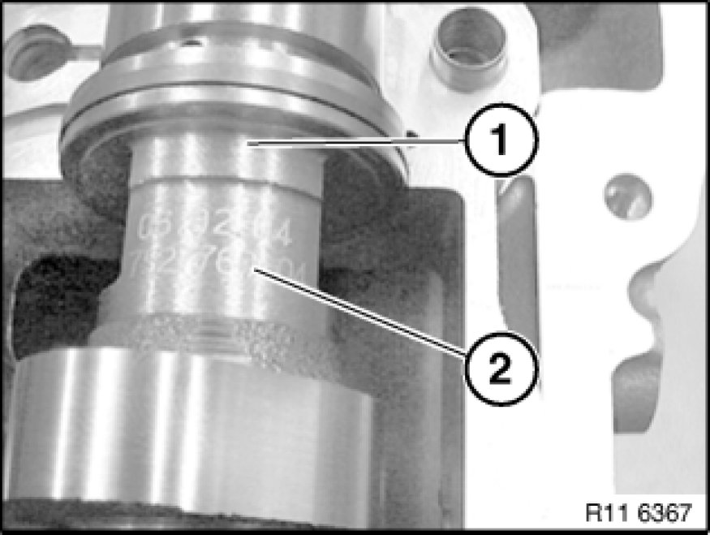
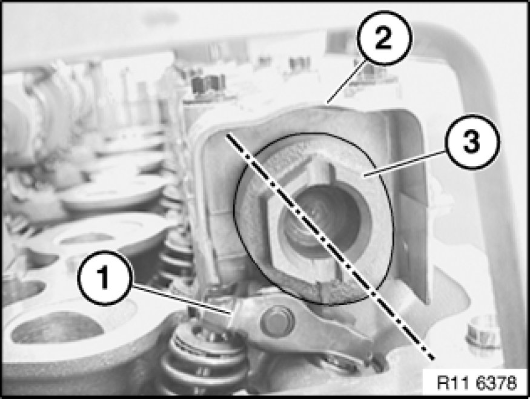
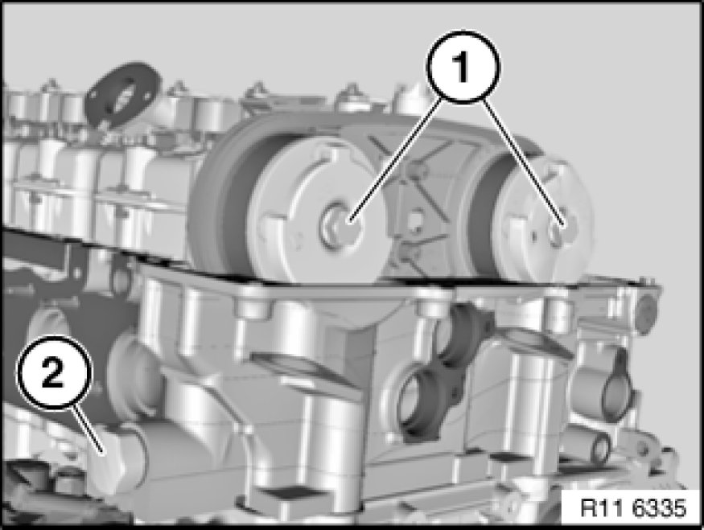
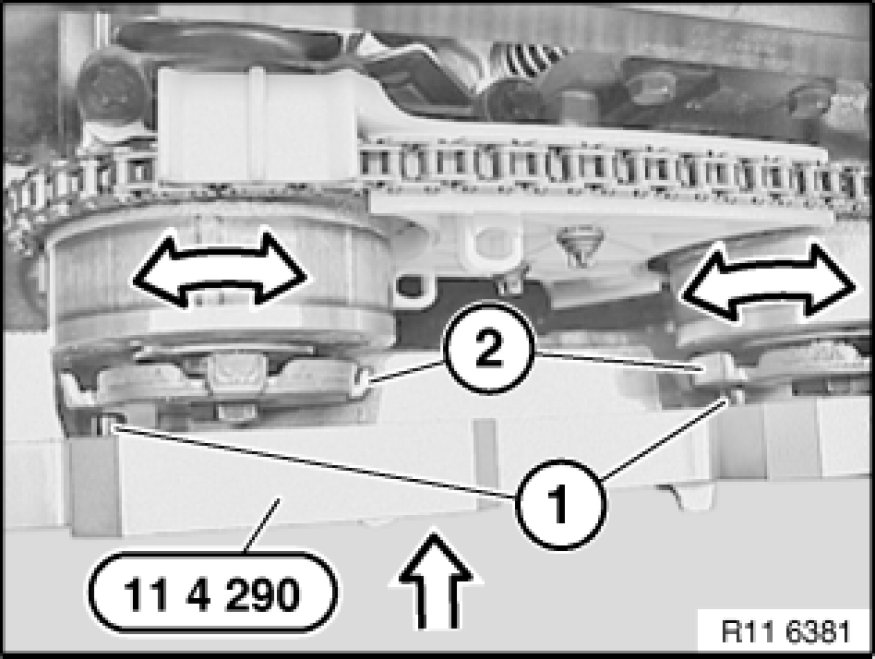
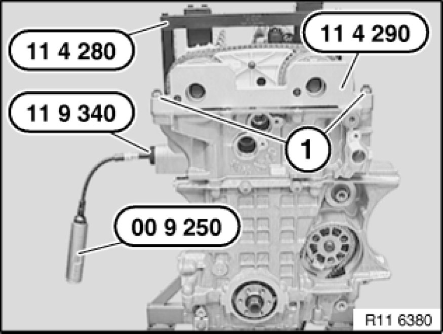

Camshaft: Adjustments
11 31 505 - Adjusting timing of camshaft(s) (N52K)

Special tools required:
- 00 9 120 00 9 120 Torque Angle Measuring Dial
- 00 9 250 00 9 250 Torque Wrench with Flexible Extension
- 11 0 300 11 0 300 Mandrel
- 11 4 280 11 4 280 Gauge
- 11 4 281
- 11 4 282
- 11 4 283
- 11 4 290 11 4 290 Gauge
- 11 9 340 11 9 340 Device

Necessary preliminary tasks:
- Remove cylinder head cover Service and Repair

Remove fastener (1) in direction of arrow.
Installation:
Install fastener (1) with bore facing outwards.

Rotate crankshaft at central bolt into TDC position.
Slide special tool 11 0 300 in direction of arrow into special tool bore and secure crankshaft.
Important!
On vehicles with optional extra SA205 (automatic transmission), there is a large bore for the TDC position shortly before the special tool bore. This bore can be confused with the special tool bore.
If the flywheel is secured in the correct special tool bore with special tool 11 0 300, the engine can no longer be moved at the central bolt.

With 1st cylinder in firing TDC position, cams of inlet camshaft (1) at 1st cylinder point upwards at an angle.

Part numbers (2) on inlet and exhaust camshafts (1) point upwards.

With 1st cylinder in firing TDC position, cams of exhaust camshaft (3) at 6th cylinder point downwards at an angle.
Cam follower (1) is not actuated.
Note:
When the engine is installed, the position of the exhaust camshaft (3) for the timing can only be checked with a mirror.

Secure special tool 11 4 283 to cylinder head with bolts (1).
Note:
Fit special tool 11 4 282 underneath on side of inlet camshaft.
Mount special tool 11 4 281 on inlet and exhaust camshafts.

Release central bolts (1).
Release central bolts (1) with special tool 11 4 280 only.
Release chain tensioner (2) (have a cleaning cloth ready).
Note:
Picture in CAD and does not show special tools.

Turn sensor gears (2) in direction of arrow until locating pins (1) on special tool 11 4 290 match up.
Slide on special tool 11 4 290 in direction of arrow.

Secure special tool 11 4 290 with bolts (1).
Screw special tool 11 9 340 into cylinder head.
Pretension timing chain with special tool 00 9 250 to 0.6 Nm.
Secure both central bolts of inlet and exhaust adjustment units with special tool 00 9 120 to inlet and exhaust camshafts.
Tightening torque 11 36 1AZ 11 36 Variable Camshaft Control VANOS.

Assemble engine.